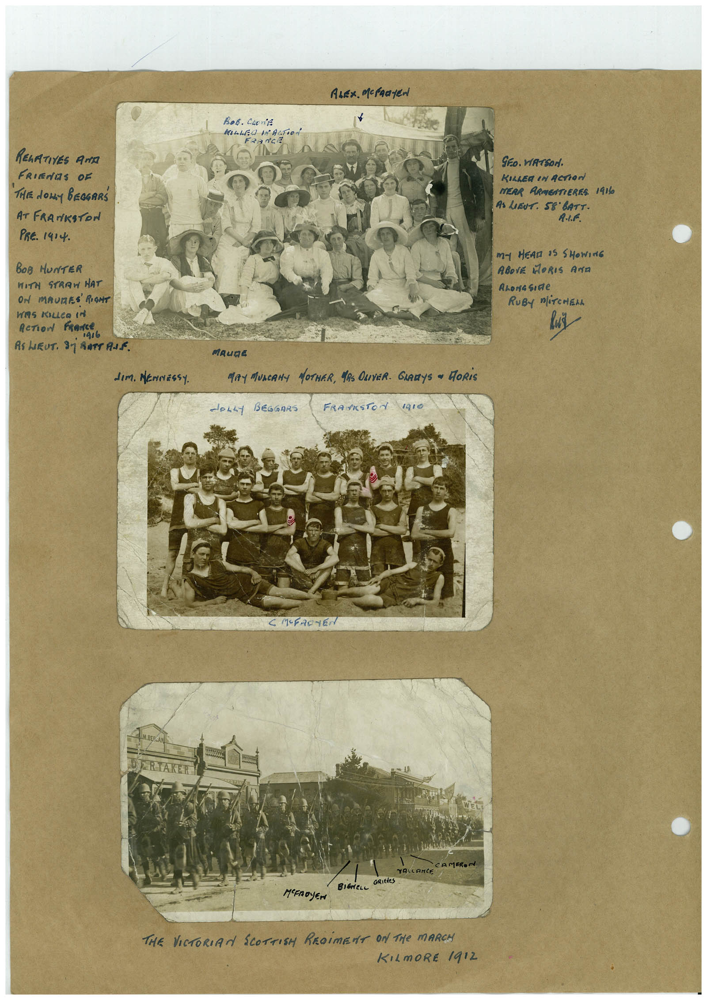

Book 1 · scan 045


Description
Transcription
Context
Review notes
Compare the machine draft with the scan. Handwriting and names need human review.
Artifacts
Edit the artifacts field in this note’s frontmatter to change these records. This summary is generated.
B01-S045-A01 — Photo & Handwritten note — Book 1, scan 045
Types: Photo, Handwritten note
Scope: Whole scanned page; individual items can be split out during review.
Caption: Not mapped yet.
Caption source: Not recorded yet.
Caption status: unmapped
Machine transcription
ALex. Mcfaayen Вов. Сконів lLEd MAcTioN FR-ACE RELATIVES ANA FRIEdES OF THEE dowy BEOGRRŚ AT FRANKSTON PRE. 1414. BOB HUNTER WITH STRAW HAT ON MAURES RONT WAS KILLeR In AcTioN FRANCe 1дs6 RS LaRUT. Sj BATT ANE GEo. WATSON. KILLER IN ACTION MERR ARMEATIEREE 1916 AS LIBUT: S8 BATT. R.L.F. M- HEAL 35 SHOWING ABOVE MORIS ANTA ALona Sirte RUBY MiTCHEN dIm. MENNESSY. MAUDE MAY MUSCANA MOTHER, MR ONVER. GIARYS ~ MORiS doLLy BEGOARS FRASESTON gIO C M-FAC-EN → CAMERON YALLRNCE GRIELeS BiéMeLc MEEROYEN THE VICTORIAN SCOTTISH REGiMENT ON THe MARCH KILmORE 1912